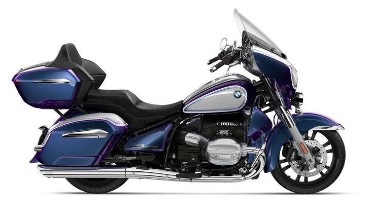
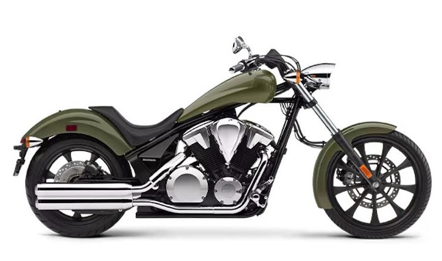
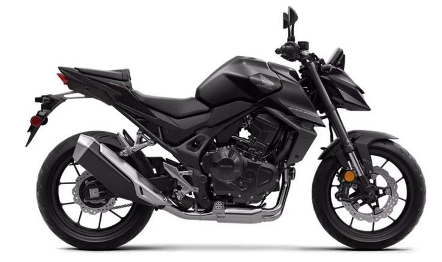
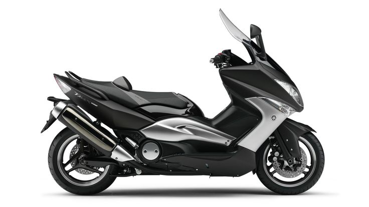

Спортбайки

Спортбайки созданы для скорости и динамичной езды. Они отличаются агрессивным дизайном, мощными двигателями и отличной управляемостью.
- Преимущества: Высокая скорость, отличная управляемость, современный дизайн.
- Недостатки: Неудобная посадка для долгих поездок, требовательность к навыкам вождения.
- Примеры моделей: Yamaha YZF-R1, Kawasaki Ninja ZX-10R, Honda CBR1000RR-R Fireblade.
Круизеры

Круизеры – это мотоциклы для комфортных поездок на дальние расстояния. Они имеют расслабленную посадку, мощные двигатели и стильный внешний вид.
- Преимущества: Комфортная посадка, стильный внешний вид, подходят для долгих поездок.
- Недостатки: Большой вес, не очень маневренные в городе.
- Примеры моделей: Harley-Davidson Iron 883, Honda Shadow, Indian Scout.
Мотоциклы Adventure (Эндуро)

Мотоциклы Adventure предназначены для путешествий по дорогам и бездорожью. Они обладают высоким клиренсом, прочной конструкцией и большим запасом хода.
- Преимущества: Универсальность, возможность езды по бездорожью, комфорт для долгих поездок.
- Недостатки: Высокий центр тяжести, большой вес.
- Примеры моделей: BMW R 1250 GS, KTM 1290 Super Adventure, Yamaha Ténéré 700.
Touring Мотоциклы
Touring мотоциклы предназначены для долгих путешествий и длительных комфортных поездок. Они отличаются вместительным топливным баком, просторной эргономикой и хорошей защитой от ветра.
- Преимущества: Комфорт на дальних дистанциях, автономность благодаря большому запасу топлива, вместительность багажа.
- Недостатки: Более тяжелый вес, меньшая динамика в городских условиях.
- Примеры моделей: Honda Gold Wing, BMW R 18, Kawasaki Voyager.
Чопперы
Чопперы предназначены для стритрейсинга с особым стилем и индивидуальностью. Они характеризуются удлиненной рамой, низкой посадкой и уникальным дизайном.
- Преимущества: Визуальная привлекательность, легкость в модификации, хорошая управляемость на ровных дорогах.
- Недостатки: Ограниченная комфортность, плохая проходимость вне асфальта.
- Примеры моделей: Harley-Davidson Softail, Indian Chief, Yamaha V-Max.
Нейкеды
Нейкеды предназначены для повседневной городской езды и коротких поездок. Они отличаются минималистичным дизайном, хорошей маневренностью и простотой в управлении.
- Преимущества: Легкость и маневренность, доступная цена, компактность.
- Недостатки: Ограниченная защита от ветра, меньший комфорт для дальних поездок.
- Примеры моделей: Yamaha MT-07, Kawasaki Z650, Honda CB650R.
Скутеры
Скутеры предназначены для городской езды и коротких поездок. Они имеют автоматическую коробку передач, легки в управлении и компактны.
- Преимущества: Простота эксплуатации, экономичность, удобство в городских условиях.
- Недостатки: Ограниченная мощность, низкая проходимость вне города.
- Примеры моделей: Honda PCX, Vespa GTS, Yamaha NMAX.